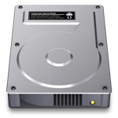

Erasing Levels
Permanent Eraser 2.5 introduced the ability to customize the level of erasing for files on a hard drive or rewritable optical disc.
File Erasing Level |
|
|  |
Simple (1x) : Overwrites the file with a single pass of random data. DoD (7x) : Overwrites the file with 7 U.S. DoD compliant passes (0xF6, 0x00, 0xFF, random, 0x00, 0xFF, random). Gutmann (35x) : Overwrites the file using the 35-pass Gutmann algorithm. This is the default option. The Gutmann method will provide the most thorough erasing procedure, but it will also take the longest amount of time to erase the data. |
Optical Disc Erasing Level |
|
|
Quick : Quickly erase the data from the rewritable optical disc. As its name suggests, this is the faster method. Complete : Thoroughly erase the data from the rewritable optical disc. This can take several times longer than the Quick method. Permanent Eraser can only erase data from rewritable optical discs, such as CD-RW and DVD-RW discs. CD-ROMs, DVD-ROMs, CD-Rs, and DVD-Rs, cannot be erased. |
|